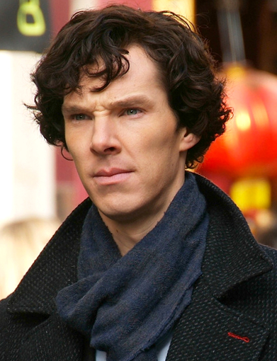
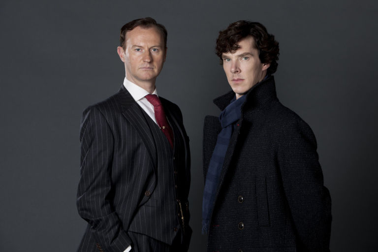
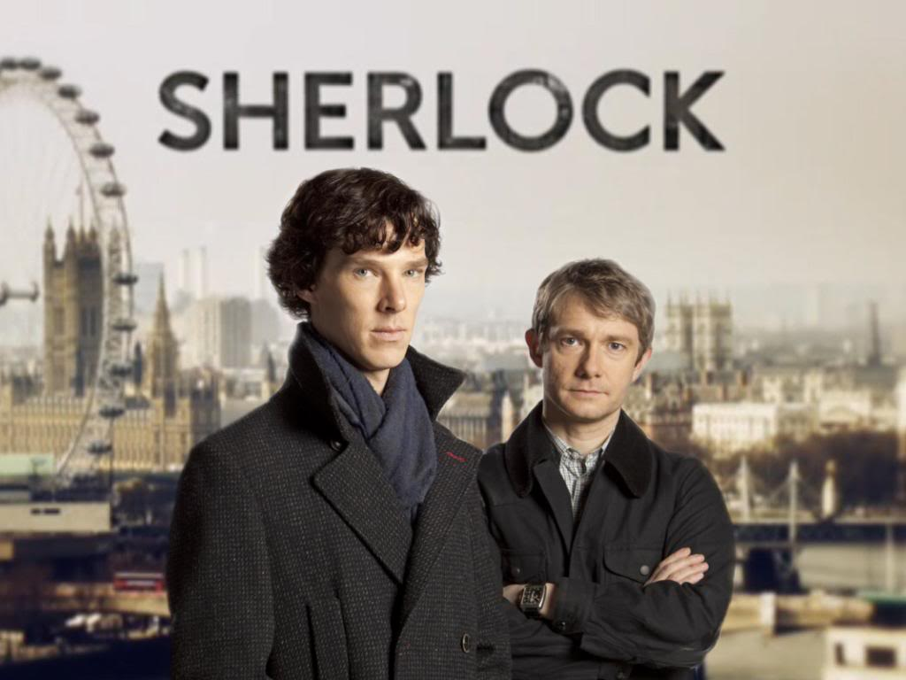
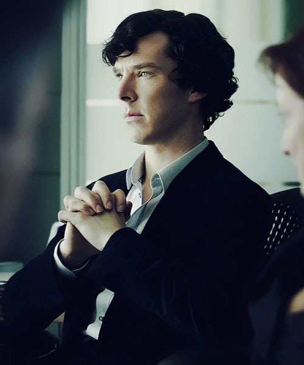
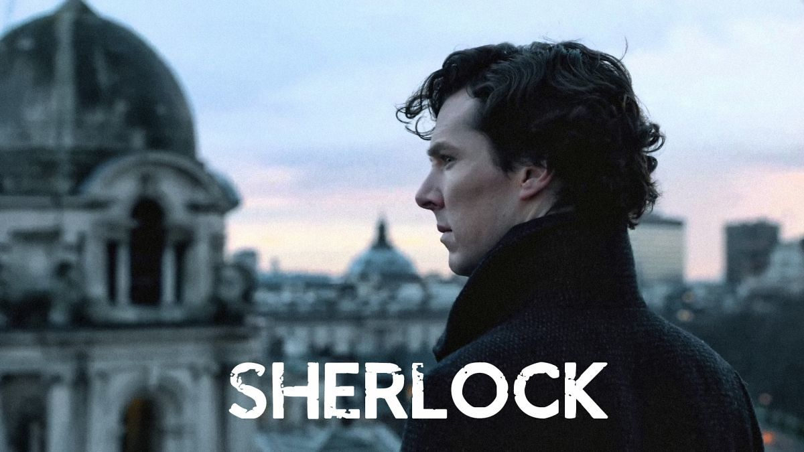

Sherlock
For many modern readers, the paradoxical qualities in Arthur Conan Doyle's Holmes are the most interesting things about the great detective, far outpacing the miraculous leaps of deductive logic that so impress Watson and Lestrade. We're fascinated by the man who is visible in outline through the screen of Watson's stout Victorian prose: the black moods, the self-medicating addictions, the furious intolerance. More than a century before Alan Moore and Frank Miller revealed Batman to be a self-hating psycho in a mask, Doyle had planted the seeds of Holmes the tormented superhero.
So it's no accident that Benedict Cumberbatch, our best Sherlock for years, should be born in the age of the modern man-child, when we've profited from the free availability of information to find new ways to be bored and more time to be bored in. Left to himself, one senses, Cumberbatch's wonderfully unearthly Holmes could well become like Hannibal Lecter or Dexter, just as Doyle's Holmes could well have become Moriarty: he's an intellectual apex predator condemned to furious boredom on a planet of unreflective dunces, and in his bleaker moments he resents every second of it.
Cumberbatch benefits greatly from the approach taken by "Sherlock" creators Steven Moffat and Mark Gatiss, Holmes fans who aimed to free the character from what they felt was a paralyzing traditionalism in adaptations. By setting the show in present-day London, they've found a way of getting at who Holmes is as a character, giving everyone from the writers to the designers to the actor playing the role the opportunity to focus on who Holmes is, rather than who he has been. While the idea is a fine one, without an adept and delicate execution the whole enterprise would come across as a self-consciously clever literary trick, a game of :
"How many Holmes references can we fit in one episode,or, worse, a cynical concession to modern audiences' disinterest in history and literature."    
Fortunately, Moffat and Gatiss' "Sherlock" is carried off with remarkable skill, with every creative level of the show combining holistically to create a vivid portrait of Sherlock Holmes as a fully developed person, and not just a bundle of costume choices and famous phrases. Not to downplay the excellence of Cumberbatch's work, but great performances don't exist on an island. "Sherlock" is constructed so that the audience sees what Holmes sees, with creative use of camerawork, editing and computer-generated effects. Even establishing shots are selectively blurred to pull focus to one particular area of the shot, as a nod to Holmes' powers of observation.